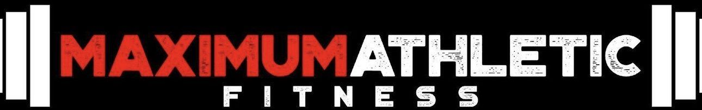

01 / A CLEAR NEXT STEP
Less guessing. More training.
A focused workout with form cues and quick set logging. Clients record their reps and load as they go.

A personal conceptSteven, here’s a first look at a Maximum Athletic app: a clear next workout, progress clients can see, and a better conversation with you.
20 seconds · No sound needed · Illustrative client data
A focused workout with form cues and quick set logging. Clients record their reps and load as they go.
A training history and exercise comparisons give clients something concrete to build on, one session at a time.
Energy, confidence, small wins and obstacles in one check-in. Clients can prepare a weekly report to share with you.
The design also works in a laptop browser, with more space for the weekly plan and training history. Select either view to see it larger.